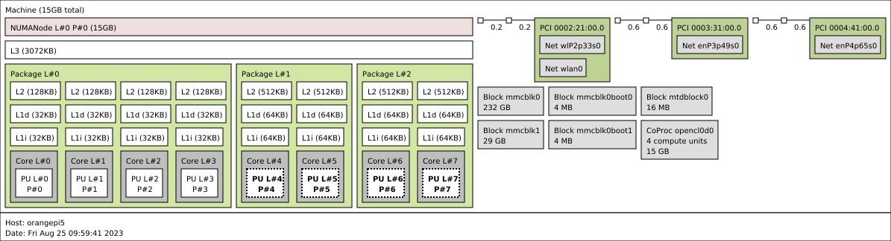

Thread Pinning¶
StreamPU enables to select on which process units (PUs) the threads are
effectively run. This is called thread pinning and it can significantly
benefit to the performance, especially on modern heterogeneous architectures.
To do so, the runtime relies on the
hwloc library.
Warning
To use thread pinning, hwloc library has to be installed on the system and
StreamPU needs to be compiled with the SPU_HWLOC preprocessor
definition. It can simply be achieved using the following CMake option:
StreamPU is not linked with the hwloc library, then the thread
pinning interface will have no effect and the threads will not be pinned.
Info
Thread pinning relies the OS. The later needs to expose appropriated system calls. While Linux and Windows provide these syscalls, macOS does not... Thus, thread pinning will have no effect on macOS :-(.
Portable Hardware Locality¶
Portable Hardware Locality (hwloc in short) is a library which provides a
portable abstraction of the hierarchical topology of modern
architectures (see the figure below).

hwloc gives the ability to pin threads over various level of hierarchy
represented by a tree structure. The deepest/lowest nodes (the leaves) are the
PUs while higher nodes represent sets of PUs that are physically close. For
instance, a PUs set can share the same UMA node (in the case of a NUMA
architecture), the same LLC or the same package.
In the Orange Pi 5 SBC, if we pin a thread on the Package L#0, it will run
over the following set of PUs: PU L#0, PU L#1, PU L#2 and PU L#3.
Thus, the pinned thread can move in the selected hwloc node during the
execution and it is up to the OS to schedule the thread on the selected PUs
set.
Warning
The indexes given by hwloc can be different from those given by the OS:
they are logical indexes that express the real locality. Consequently, in
StreamPU, it is important to use hwloc logical indexes. The
hwloc-ls command gives an overview of the current topology with these
logical indexes.
Sequence & Pipeline¶
In StreamPU, thread pinning can be set in runtime::Sequence and
runtime::Pipeline class constructors. In both cases, there is a dedicated
argument of std::string type named sequence_pinning_policy for
runtime::Sequence or pipeline_pinning_policy for runtime::Pipeline.
Info
For NUMA architectures, it is important to specify thread pinning at the
construction of the runtime::Sequence/runtime::Pipeline object to
guarantee that the data will be allocated and initialized on the right
memory banks (according to the first touch policy) during the replication
process.
To specify the pinning policy, we defined a syntax to express hwloc objects
with three different separators:
- Pipeline stage (does not concern
runtime::Sequence):| - Replicated stage (= replicated sequence = one thread):
; - For one thread, the list of pinned
hwlocobjects (= logical or):,
Then, the pinning policy can contains all the available hwloc objects. Below
is the correspondence between the std::string and the hwloc object types:
std::map<std::string, hwloc_obj_type_t> str_to_hwloc_obj =
{
/* global containers */ /* data caches */ /* instruction caches */
{ "GROUP", HWLOC_OBJ_GROUP }, { "L5D", HWLOC_OBJ_L5CACHE }, { "L3I", HWLOC_OBJ_L3ICACHE },
{ "NUMA", HWLOC_OBJ_NUMANODE }, { "L4D", HWLOC_OBJ_L4CACHE }, { "L2I", HWLOC_OBJ_L2ICACHE },
{ "PACKAGE", HWLOC_OBJ_PACKAGE }, { "L3D", HWLOC_OBJ_L3CACHE }, { "L1I", HWLOC_OBJ_L1ICACHE },
{ "L2D", HWLOC_OBJ_L2CACHE }, /* compute units */
{ "L1D", HWLOC_OBJ_L1CACHE }, { "CORE", HWLOC_OBJ_CORE },
{ "PU", HWLOC_OBJ_PU },
};
To specify the index X of an hwloc object, the following syntax is used:
OBJECT_X (ex: PU_5 refers to the logical PU n°5).
Info
CORE and PU objects can be confusing. If the CPU cores do not support
SMT, then CORE and PU are the same. However, if the CPU cores support
SMT, then the PU is the hardware thread identifier inside a given CORE.
Illustrative Examples¶
This section gives some examples to understand how the syntax works. We suppose that we have a CPU with 8 PUs with the same topology as the the Orange Pi 5 Plus SBC presented before.
Example 1¶
Let's suppose we want to setup a 3-stage pipeline with the following characteristics:
- Stage 1 - No replication (= 1 thread):
- Pinned to
PU_0
- Pinned to
- Stage 2 - 4 replications (= 4 threads):
- Thread n°1 is pinned to
PU_4orPU_5 - Thread n°2 is pinned to
PU_4orPU_5 - Thread n°3 is pinned to
PU_6orPU_7 - Thread n°4 is pinned to
PU_6orPU_7
- Thread n°1 is pinned to
- Stage 3 - No replication (= 1 thread):
- Pinned to
PU_0,PU_1,PU_2orPU_3
- Pinned to
graph LR;
S1T1(Stage 1, thread 1 - pin: PU_0)-->SYNC1;
SYNC1(Sync)-->S2T1;
SYNC1(Sync)-->S2T2;
SYNC1(Sync)-->S2T3;
SYNC1(Sync)-->S2T4;
S2T1(Stage 2, thread 1 - pin: PU_4 or PU_5)-->SYNC2;
S2T2(Stage 2, thread 2 - pin: PU_4 or PU_5)-->SYNC2;
S2T3(Stage 2, thread 3 - pin: PU_6 or PU_7)-->SYNC2;
S2T4(Stage 2, thread 4 - pin: PU_6 or PU_7)-->SYNC2;
SYNC2(Sync)-->S3T1(Stage 3, thread 1 - pin: PU_0, PU_1, PU_2 or PU_3);In the previous configuration, 6 threads will execute simultaneously (even if the given architecture supports up to 8 executions in parallel).
To instantiate this runtime::Pipeline, here are the corresponding constructor
parameters:
- Number of replications (= threads) per stage:
{ 1, 4, 1 } - Enabling pinning per stage:
{ true, true, true } - Pinning policy:
"PU_0 | PU_4, PU_5; PU_4, PU_5; PU_6, PU_7; PU_6, PU_7 | PU_0, PU_1, PU_2, PU_3"
The previous pinning policy syntax can be compressed a little bit as follow:
- Pinning policy :
"PU_0 | PACKAGE_1; PACKAGE_1; PACKAGE_2; PACKAGE_2 | PACKAGE_0"
Example 2¶
Let's now consider that we want to pin all the threads of the stage 2 on the
PU_4, PU_5, PU_6 or PU_7 (this is less restrictive than the previous
example). The pinning strategy for stage 1 and 3 is unchanged.
graph LR;
S1T1(Stage 1, thread 1 - pin: PU_0)-->SYNC1;
SYNC1(Sync)-->S2T1;
SYNC1(Sync)-->S2T2;
SYNC1(Sync)-->S2T3;
SYNC1(Sync)-->S2T4;
S2T1(Stage 2, thread 1 - pin: PU_4, PU_5, PU_6 or PU_7)-->SYNC2;
S2T2(Stage 2, thread 2 - pin: PU_4, PU_5, PU_6 or PU_7)-->SYNC2;
S2T3(Stage 2, thread 3 - pin: PU_4, PU_5, PU_6 or PU_7)-->SYNC2;
S2T4(Stage 2, thread 4 - pin: PU_4, PU_5, PU_6 or PU_7)-->SYNC2;
SYNC2(Sync)-->S3T1(Stage 3, thread 1 - pin: PU_0, PU_1, PU_2 or PU_3);Here are the corresponding parameters:
- Number of replications (= threads) per stage:
{ 1, 4, 1 } - Enabling pinning per stage:
{ true, true, true } - Pinning policy :
"PU_0 | PACKAGE_1, PACKAGE_2 | PACKAGE_0"
With the previous syntax, the 4 threads of the stage 2 will apply the
PACKAGE_1, PACKAGE_2 policy.
Example 3¶
It is also possible to choose the stages we want to pin or not using a vector of
boolean. Let's suppose we do not want to specify any pinning for the stage 1.
graph LR;
S1T1(Stage 1, thread 1 - no pinning)-->SYNC1;
SYNC1(Sync)-->S2T1;
SYNC1(Sync)-->S2T2;
SYNC1(Sync)-->S2T3;
SYNC1(Sync)-->S2T4;
S2T1(Stage 2, thread 1 - pin: PU_4, PU_5, PU_6 or PU_7)-->SYNC2;
S2T2(Stage 2, thread 2 - pin: PU_4, PU_5, PU_6 or PU_7)-->SYNC2;
S2T3(Stage 2, thread 3 - pin: PU_4, PU_5, PU_6 or PU_7)-->SYNC2;
S2T4(Stage 2, thread 4 - pin: PU_4, PU_5, PU_6 or PU_7)-->SYNC2;
SYNC2(Sync)-->S3T1(Stage 3, thread 1 - pin: PU_0, PU_1, PU_2 or PU_3);Here are the corresponding parameters:
- Number of replications (= threads) per stage:
{ 1, 4, 1 } - Enabling pinning per stage:
{false, true, true} - Pinning policy:
"| PACKAGE_1, PACKAGE_2 | PACKAGE_0"
In this case, the OS will be in charge of pinning the thread of the first stage.
Unpin¶
An unpin function exists and can be called by each thread individually. Once
the unpin function is triggered the thread will be free to be scheduled by the
OS over all the process units.
Warning
We assume that the user is aware of the computer architecture, uses the
logical indexes of hwloc and follows the previously defined syntax rules,
otherwise the code will throw exceptions.